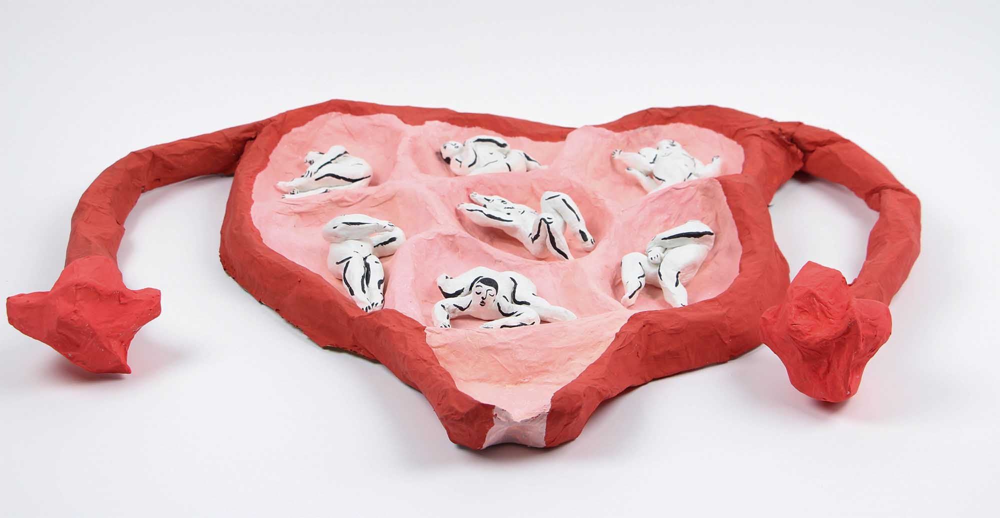
The 7 Pocket Womb
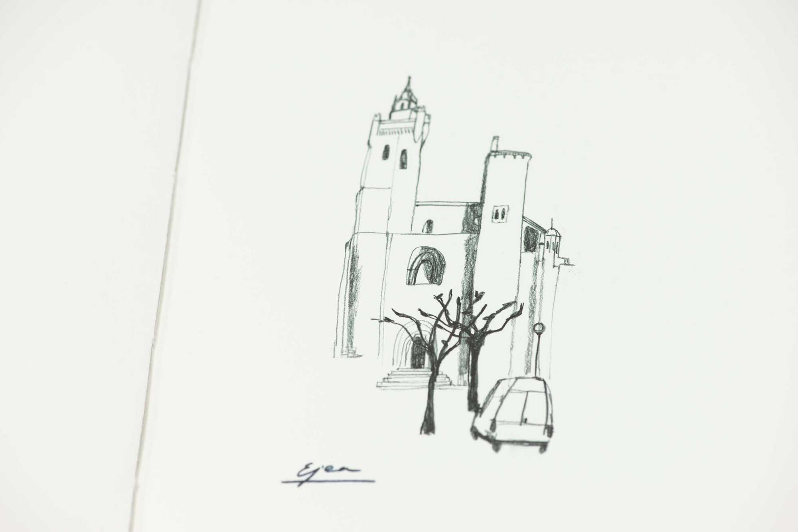
La Abuela Consuelo
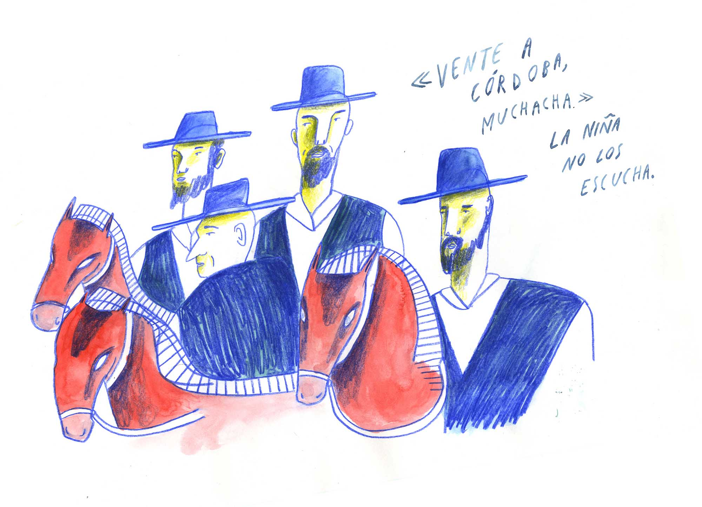
Conversations About Drawing: Illustrating Poems
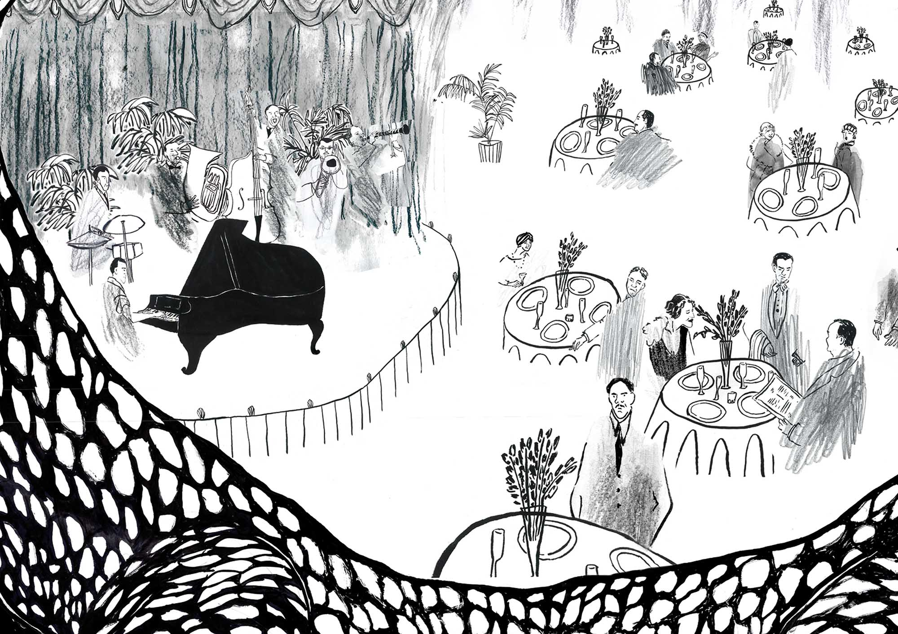
The Crocodile
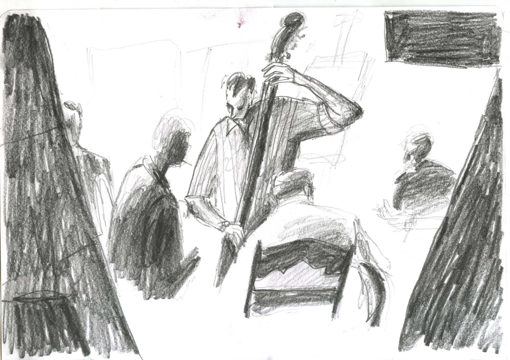
Conversations About Drawing: Everyday Drawings
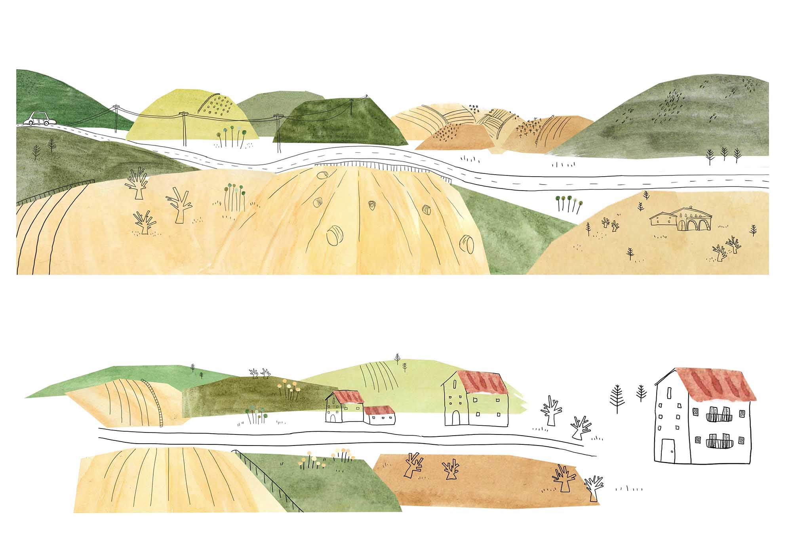
Guitarrica
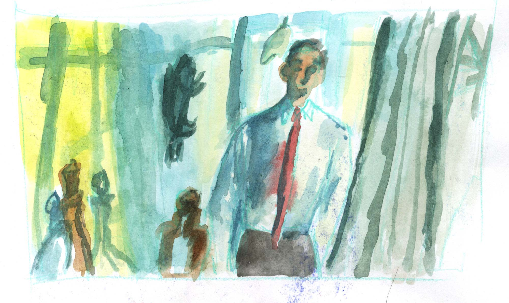
Conversations About Drawing: Drawing From Films
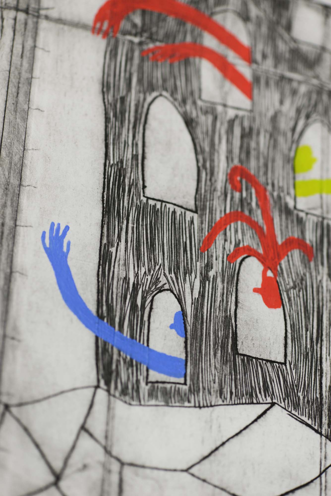
La Invención de Morel - Intaglio
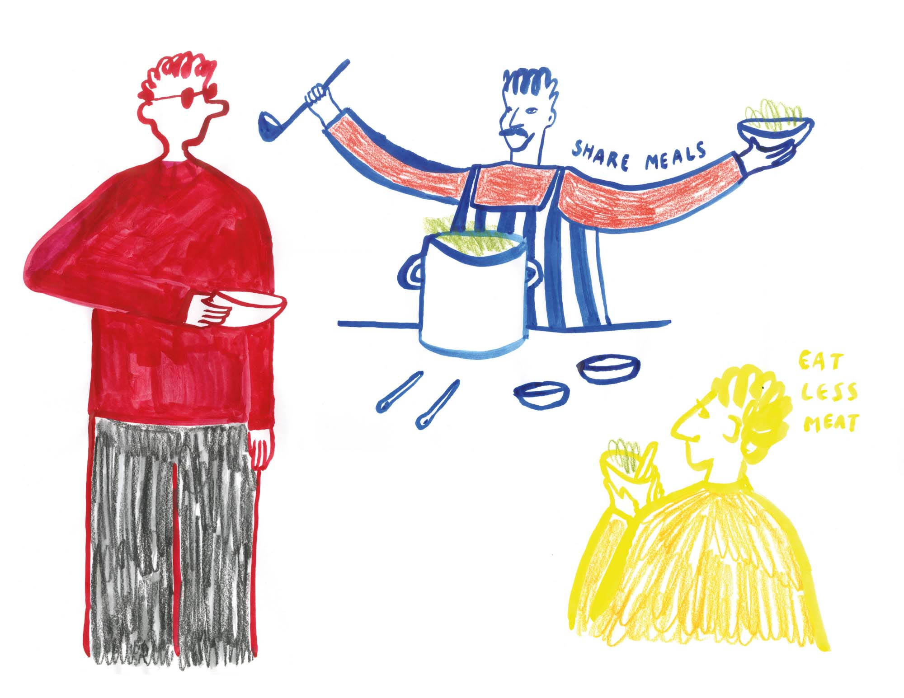
Small Steps, Brighter Future
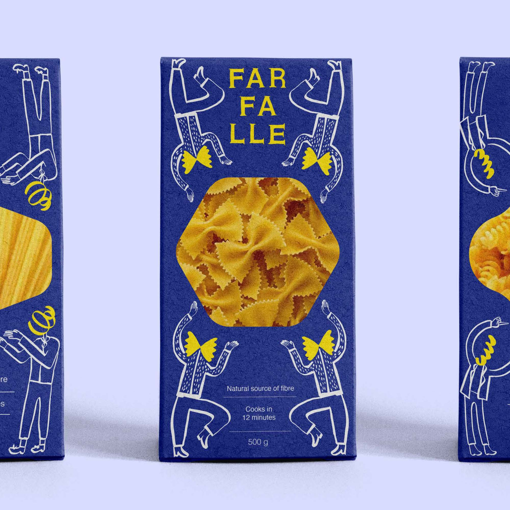
Pasta Branding
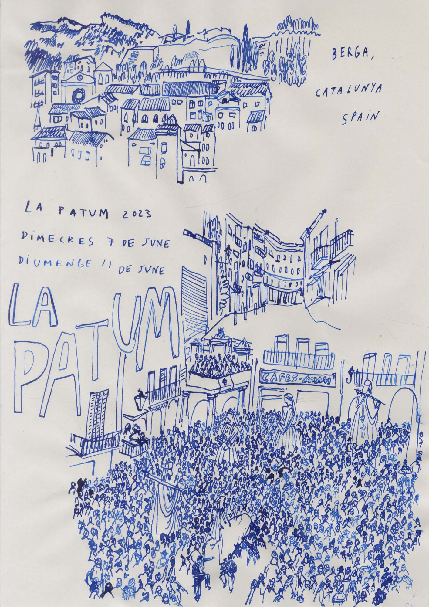
La Patum
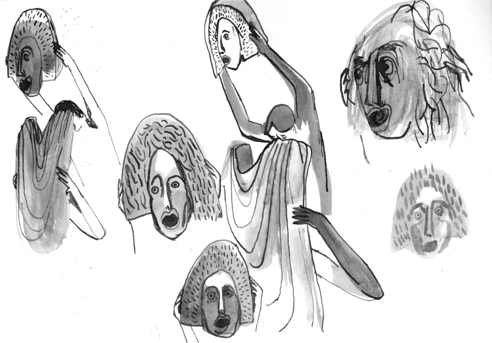
Oedipus Rex by Per Poc - Puppet Making
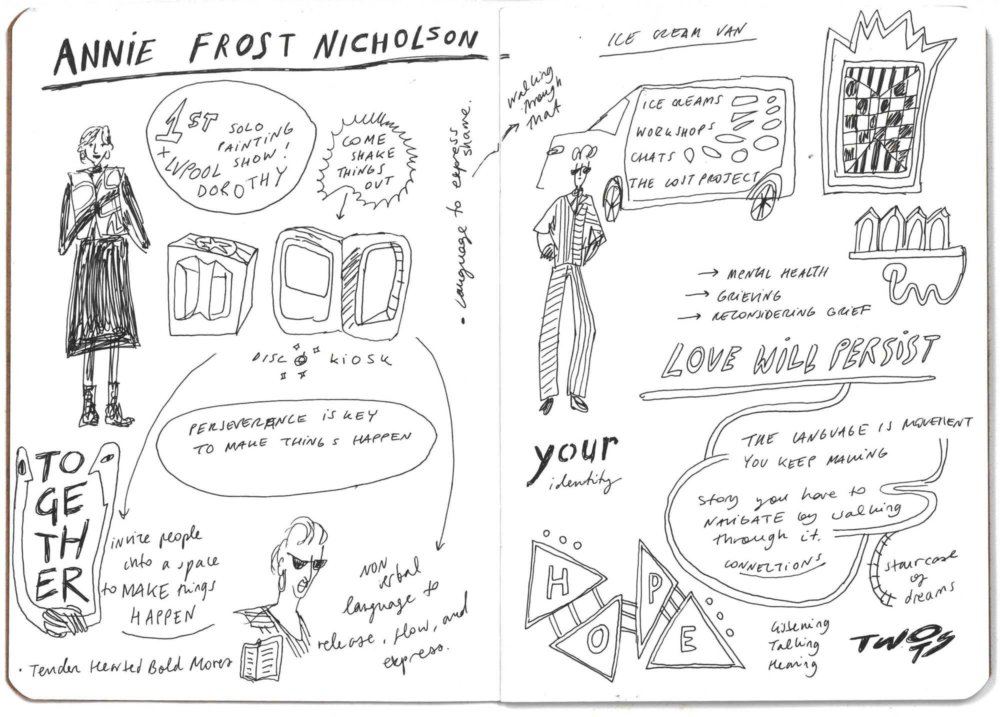
Visual Minutes